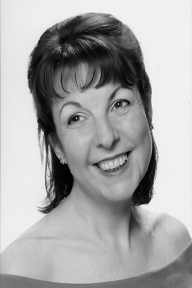

Carol-Anne Graingerssssssssssss
Sopranossssssssssssss
Since completing her studies at London College of Music (where she was awarded the Lloyd-Webber Performance Prize) and Trinity College of Music Carol-Anne has enjoyed a wide variety of performance situations from Oratorio to Musical Theatre. Roles performed include, Amore (Coronation of Poppea), Barbarina (Marriage of Figaro), First Geni & Papagena (Magic Flute) ,Zerlina (Don Giovanni), Hansel (Hansel & Gretel) Tuptim (King & I ), Young Sally (Follies), Yum Yum (Mikado) and she created the role of Lucie Drefus for the premier of Drefus at the London International Jewish Music Festival. Carol-Anne has worked both in the UK and internationally with, Classical Productions (Aida Carmen & Tosca), The G&S Company (Iolanthe Yeoman of the Guard), the music in education company Opex 2000 and Surrey Opera. She has appeared with "Not Pavarotti" at the, Wandsworth Arts Festival, Mole Valley Arts Alive, the Lake District International Music Festival and most recently at The Pheasantry. As a professional chorister her ensemble work includes the Ambrosian Chorus, John McCarthy Singers, London Voices, West London Synagogue and the Geoffrey Mitchell Singers for Opera Rara. Oratorio engagements in London and the South East include, The Christmas Story (Schutz), Wachet auf, raft uns die Stimme, St John's Passion (Bach), Requiem (Mozart) Maria Theresa Mass (Hayden), Messe Solennelle (Rossini) and in Terra Pax (Finzi). Carol-Anne has performed recitals for the City of London Festival, St Andrew's, Holborn, St Brides Fleet Street and most recently performing a programme called "If Music be the Food of Love" at Lauderdale House, The Southwark Play House the Bletchingley Centre and Mandeville Place. In less traditional performance venues she has also performed for the Council for Music in Hospitals. Last year she was fortunate enough to perform excerpts from Paddington Pollaky by Bryan Kesselman for the final showcase of the Flourish composer's competition for Opera up Close and the Kings Head Theatre. This year's projects include a recital for the Bösendorfer Concert Series and performances with the London based acapella trio "Simply Sopranos" Over the last few years Carol-Anne has been kept more than busy marketing and performing with Not Pavarotti touring small theatres and arts centres throughout the country with their two-hour theatre shows. |